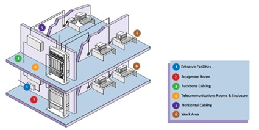
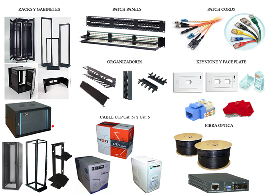
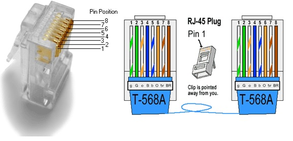
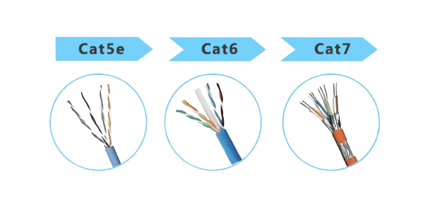
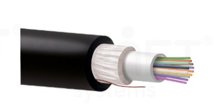
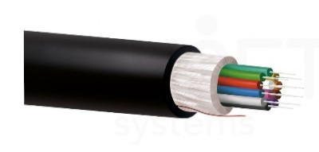
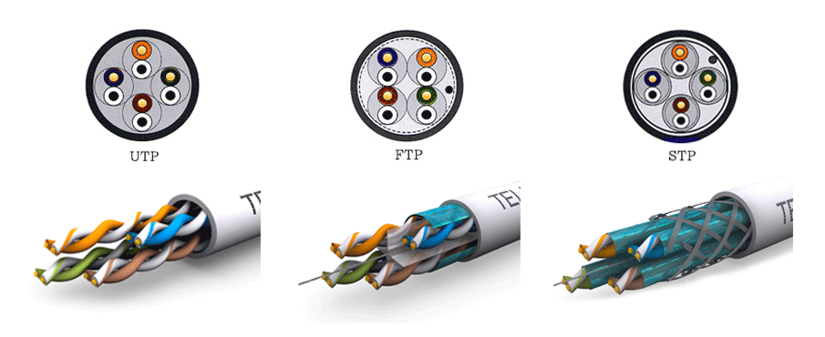
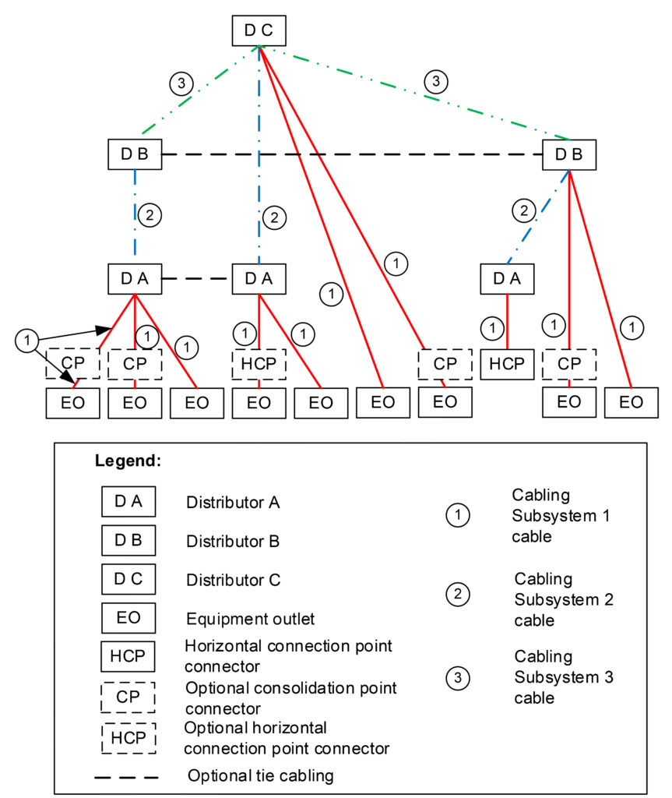

¿Qué compone a un sistema de cableado estructurado?

El cableado estructurado está compuesto por un conjunto de elementos interconectados que permiten el funcionamiento organizado y eficiente de las redes de telecomunicaciones. Estos componentes trabajan de manera integrada para garantizar la transmisión de voz, datos y video dentro de edificios residenciales, comerciales e industriales. Cada elemento cumple una función específica dentro de la infraestructura de red, facilitando la conectividad, el mantenimiento y la expansión futura del sistema.
Los Subsistemas Principales de la Infraestructura

Un sistema integrado consta de seis componentes o subsistemas fundamentales que dividen el flujo físico de los datos dentro de un edificio:
- 1. Espacio de Entrada (EF): Punto de entrada del cableado externo al edificio, donde se reciben los servicios de telecomunicaciones desde el proveedor. Aquí se instalan dispositivos de protección contra sobretensiones y equipos de terminación para la conexión con la red interna.
- 2. Sala de Equipos (Equipment Room - ER): Es un espacio centralizado destinado al alojamiento de dispositivos críticos de red, como servidores, switches, routers y sistemas de telecomunicaciones. Su función principal es conectar el cableado externo con la red interna del edificio, permitiendo la distribución eficiente de los servicios de comunicación. Debido a la importancia de los equipos instalados, esta sala requiere condiciones ambientales controladas, especialmente en temperatura, ventilación y humedad.
- 3. Cableado de la columna vertebral (Backbone): Es el encargado de interconectar las distintas áreas de telecomunicaciones dentro de un edificio. Este sistema enlaza salas de equipos, instalaciones de entrada y salas de telecomunicaciones mediante cables de alta capacidad, comúnmente instalados de forma vertical entre pisos. Para esta función suelen utilizarse cables de cobre de categorías avanzadas o fibra óptica, permitiendo una comunicación rápida y estable entre los distintos segmentos de la red. Se divide en dos tramos: el Subsistema 2 (cruce horizontal al intermedio) y el Subsistema 3 (cruce intermedio al principal).
Distribución Horizontal y Áreas de Destino
Los subsistemas restantes configuran la entrega directa de los servicios de telecomunicaciones desde el núcleo de la red hacia cada uno de los terminales finales de la organización:
- 4. Sala de Telecomunicaciones (TR): Es el lugar donde finalizan los cables horizontales y de backbone, sirviendo como punto de distribución hacia las áreas de trabajo. En este espacio se organizan paneles de parcheo, conectores y equipos que permiten administrar las conexiones de red de forma ordenada. Su correcta organización facilita el mantenimiento y la resolución de problemas dentro de la infraestructura de cableado.
- 5. Cableado horizontal: Es el encargado de transportar la señal de telecomunicaciones desde la sala de telecomunicaciones hasta las áreas de trabajo de los usuarios dentro de un mismo piso. Generalmente está compuesto por cables de par trenzado o fibra óptica y debe cumplir con longitudes máximas establecidas por normas internacionales para garantizar un rendimiento óptimo de la red. Este subsistema incluye conectores, paneles y puntos de consolidación que permiten distribuir los recursos de comunicación de manera eficiente.
- 6. Área de trabajo (WA): Representa el punto final del sistema de cableado estructurado, donde los usuarios interactúan directamente con la red. Comprende los conectores de pared, cables de parche y dispositivos finales como computadoras, impresoras, teléfonos IP y equipos móviles. Este elemento permite que los recursos de telecomunicaciones lleguen de forma segura y organizada al usuario final.
Importancia y Beneficios del Diseño Estructurado
El cableado estructurado es fundamental dentro de una infraestructura de telecomunicaciones, ya que permite organizar y optimizar la transmisión de voz, datos y video de manera eficiente. Gracias a sus estándares de instalación, facilita el mantenimiento, reduce fallos de conexión y mejora el rendimiento general de la red. Además, al emplear componentes normalizados, las organizaciones pueden expandir o actualizar sus sistemas sin realizar modificaciones complejas, garantizando estabilidad y una mejor administración de los recursos tecnológicos.
- Escalabilidad: El cableado estructurado permite ampliar la infraestructura de red de manera sencilla conforme aumentan las necesidades de una empresa o institución. La organización estandarizada de sus componentes facilita agregar nuevos dispositivos, áreas de trabajo o tecnologías sin afectar el funcionamiento general del sistema.
- Flexibilidad: Este sistema se adapta fácilmente a diferentes entornos y tecnologías de comunicación, tanto en espacios residenciales como comerciales. Su diseño permite reorganizar equipos o integrar nuevas soluciones tecnológicas sin requerir cambios drásticos en la infraestructura existente.
- Fiabilidad: Al basarse en estándares internacionales y buenas prácticas de instalación, el cableado estructurado garantiza una red más estable y segura. Esto reduce interferencias, pérdidas de señal y tiempos de inactividad, asegurando un funcionamiento eficiente y continuo de las comunicaciones.
Estandarización de Conectores de Red
Dentro de un sistema de cableado estructurado, la normalización de conectores y puntos de terminación resulta esencial para garantizar compatibilidad entre dispositivos y fabricantes. Estándares como ANSI/TIA-568 establish el uso de conectores RJ-45 para redes Ethernet de cobre, además de configuraciones específicas de cableado, como T568A y T568B, utilizadas para organizar correctamente el orden de los conductores dentro del cable de par trenzado. Esta estandarización reduce errores de instalación y facilita la interoperabilidad entre equipos de red.

A continuación se detallan los tipos de conductores normalizados bajo los estándares ANSI/TIA-568 para los subsistemas horizontal y de columna vertebral (Backbone).
Cableado de Columna Vertebral (Backbone)
-
Par Trenzado (Cobre): Cables de 100 ohmios, tales como Cat5, Cat6 o Cat7.

-
Fibra Óptica Multimodo: Recomendado de 50/125 μm optimizado para láser de 850 nm (se aceptan 62,5/125 μm y 50/125 μm).

-
Fibra Óptica Monomodo: Fibra monomodo estándar para enlaces de distancias troncales extendidas.

Cableado Horizontal
-
Par Trenzado (Cobre): 4 pares de 100 ohmios, tanto sin pantalla (UTP) como blindado (STP), de categorías Cat5e, Cat6 o Cat7.

- Fibra Óptica Multimodo: Cableado de dos fibras o superior, recomendado de 62,5/125 micrones o 50/125 micrones.
- Fibra Óptica Monomodo: Cableado de dos fibras o mayor número de hilos monomodo.
Organización Física de Equipos
Los sistemas de cableado estructurado también contemplan la organización física de los dispositivos de red mediante el uso de racks, gabinetes y paneles de parcheo (patch panels). Estos elementos permiten distribuir, identificar y administrar las conexiones de forma ordenada, reduciendo la complejidad del mantenimiento y facilitando futuras expansiones de la red. La correcta administración del cableado disminuye interferencias, mejora la ventilación de los equipos y aumenta la seguridad de la infraestructura tecnológica.

Categorías del Cableado de Red
La estandarización también se refleja en las categorías de los cables de red, las cuales determinan el rendimiento, velocidad de transmisión y ancho de banda soportado. Categorías como Cat5e, Cat6, Cat6a y Cat7 poseen características técnicas específicas para minimizar interferencias electromagnéticas y optimizar el transporte de datos. La elección de la categoría adecuada depende de las necesidades de la infraestructura y del nivel de tráfico esperado dentro de la red.